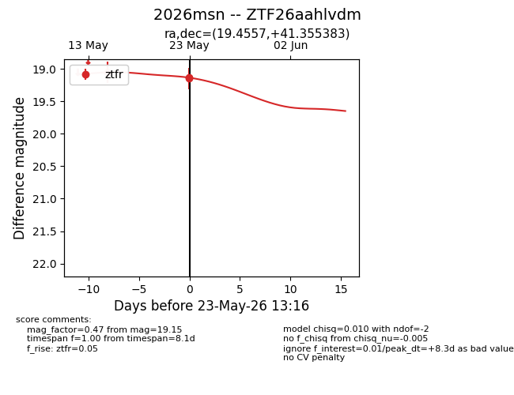
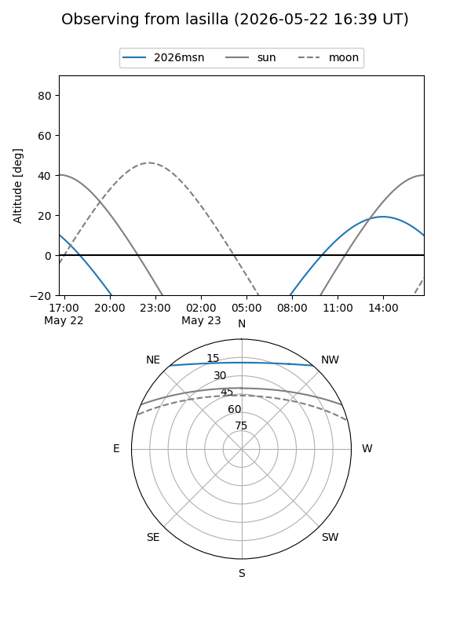
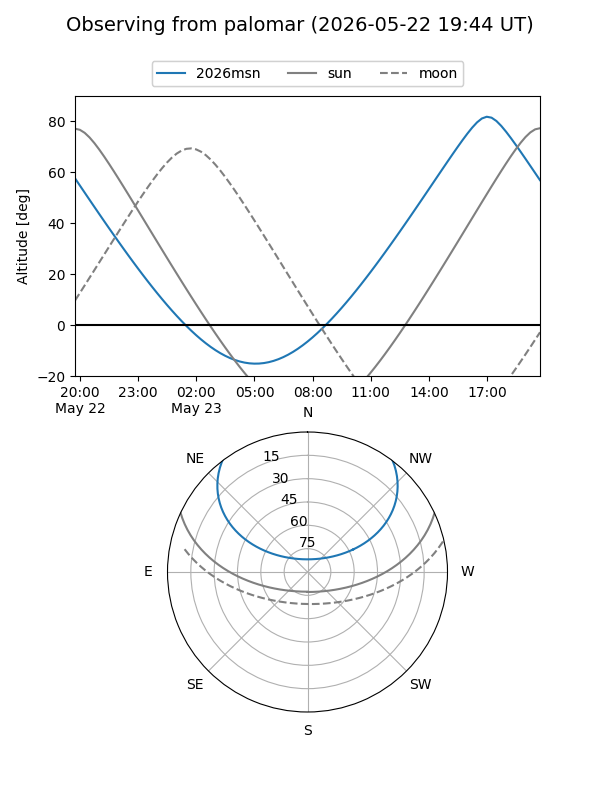
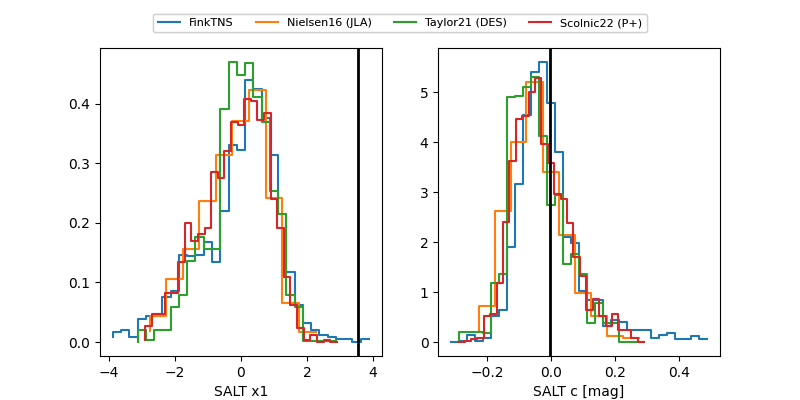

2026msn
Target 2026msn at 2026-05-23 13:18
Aliases and brokers:
lsst-FINK: link
lsst-Lasair: link
lsst-ALeRCE: link
ztf-FINK: link
ztf-Lasair: link
ztf-ALeRCE: link
TNS: link
YSE: link
alt names
ZTF26aahlvdm (ztf,fink_ztf)
2026msn (tns,yse)
Coordinates:
equatorial (ra, dec) = 19.4557,+41.35538
equatorial (HMS+DMS) = 01:17:49.37,+41:21:19.38
galactic (l, b) = (128.2401,-21.24426)
Flags:
Photometry:
last ztfr=19.15
3 ztfr detections
Lightcurve

Visibility


Additional plots
